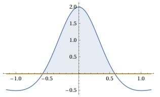

Aufgabe 55 Bestimmen Sie die Lösungsmenge der Ungleichung für x ∈ ℝ: 2 - 6x2 ---------- ≥ 0 (x2 + 1)3 x2 + 1 ist für alle x ∈ ℝ > 0 (x2 + 1)3 ist für alle x ∈ ℝ > 0 2 - 6x2 Soll ---------- ≥ 0 sein, (x2 + 1)3 dann muss auch 2 - 6x2 ≥ 0 sein. 2 - 6x2 ≥ 0 |+6x2 2 ≥ 6x2 |:6 1 x2 ≤ --- |√ 3 |x| ≤ |x| = x für x ≥ 0 --> x ≤ |x| = -x für x ≤ 0 --> -x ≤ |*(-1) x ≥ - |x| ≤ trifft zu für x ≤ ∩ x ≥ - = - ≤ x ≤ 2 - 6x2 ---------- ≥ 0 trifft zu für (x2 + 1)3 L = - ≤ x ≤ ∩ ℝ L = - ≤ x ≤ oder 2 - 6x2 Nullstellen von ----------- (x2 + 1)3 2 - 6x2 = 0 |+6x2 6x2 = 2 |:6 1 x2 = --- |ⱱ 3 x1,2 = ±

Die Funktionswerte von x = - √(1/3) bis + √(1/3) liegen oberhalb der x-Achse, erfüllen also die Bedingung ≥ 0. L = - ≤ x ≤